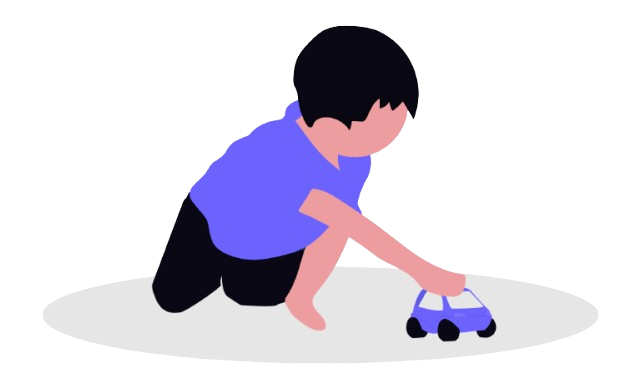

Igračke koje razumeju svako dete
Portal je posvećen igračkama koje su prilagođene deci sa različitim smetnjama u razvoju. Da svaki od mališana ima lepo sećanje na detinjstvo uprkos svim iskušenjima i problemima.
Portal je posvećen igračkama koje su prilagođene deci sa različitim smetnjama u razvoju. Da svaki od mališana ima lepo sećanje na detinjstvo uprkos svim iskušenjima i problemima.

Svaka modifikacija je osmišljena da podstakne konkretnu razvojnu oblast kod deteta.
Prilagođene igračke omogućavaju deci sa smetnjama da se igraju ravnopravno sa vršnjacima.
Različite teksture, zvuci i boje podstiču senzorni razvoj i pažnju deteta.
Svako dete zaslužuje da oseti radost igre, bez obzira na fizička ili razvojna ograničenja.
Roditeljima, terapeutima i vaspitačima portal pruža jasne smernice pri izboru odgovarajuće igračke.
Konfigurator omogućava da igračku menjate dok ne pronađete kombinaciju koja detetu najviše odgovara.

Isprobajte naš jedinstveni alat! Izaberite osnovni model, prilagodite boje i dodajte različite senzorne elemente spram specifičnih potreba vašeg deteta.
Omogućiti deci sa smetnjama u razvoju potpunu inkluziju kroz samu igru. Na taj način omogućavamo im da se bez granica i ravnopravno igraju sa svojim vršnjacima u svom okruženju.
Vizija kompanije "NoLimits d.o.o." jeste da postane moderno, socijalno i društveno odgovorno preduzeće koje proizvodi igračke i društvene igre visokog kvaliteta i u budućnosti razvija poslovanje na tržištima u regionu.